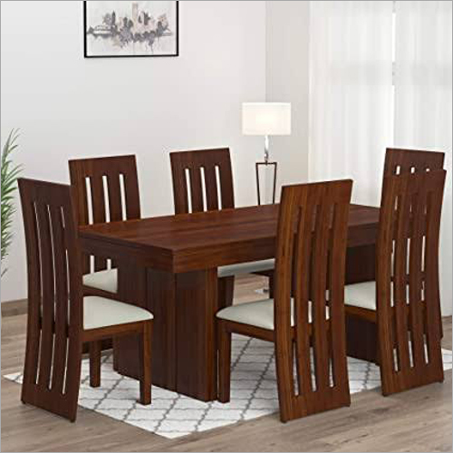
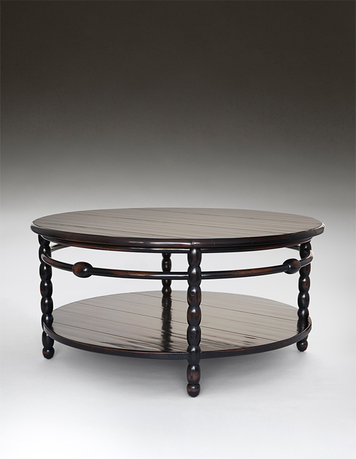

Tables
They say that everything good happens around a table. For example, celebrations and after dinner conversations that go on forever and beyond. The table that adapts to your lifestyle exists and you'll find yours here. Because no one lives like you! And what better place than at a table.

Melvar
Melvar table made from walnut veneer and legs with brushed stainless steel base 121 x 121cm
Rs.25,000

Felio
Felio table made from walnut veneer and legs with brushed stainless steel base 180 x 100cm
Rs.37,000

Burano
Burano glass table, 200 x 90 cm
Rs.43,000

Nealy
Nealy round table with a walnut veneer in a natural finish, Ø 150 cm
Rs.34,000

X Trestle Coffee Table
This table employs a simple classicism which can be seen in the work of Adolph Loos and the architects of the Vienna Secessionist Movement.
Rs.26,000

EmberOak Ripple Table
This compact coffee table mixes warm oak textures with a gently rippled surface pattern, giving the top a subtle wave-like effect when light hits it.
Rs.15,600

Bailley Oval Dining Table
The strong architectural design for this table is inspired by furniture from the Scottish Arts and Crafts Movement.
Rs.31,400

Romaine Low Table
The legs on this table are a modern interpretation of those found on the Greco-Roman daybeds of the Roman Empire.
Rs.21,000

A smooth, round wooden coffee table with vertical slatted sides that cast soft shadows, giving it a calm, airy feel. It adds warmth to a room without trying too hard—simple, modern, and quietly elegant.
Rs.17,500

Arc Round Table
A compact rectangular table in warm oak tones, designed with clean edges and a light finish that brings a calm, modern feel to the room.
Rs.18,300

Himlauda Dining Table
The table and seating follow this long, straight layout, giving the room a clear, linear flow.
Rs.31,800

Bobbin Low Table
This table is inspired by the turned “Bobbin” technique of the 17th century which was employed to reduce the bulkiness of the furniture and named for the wooden spools used for storing thread.
Rs.18,000